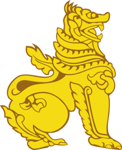
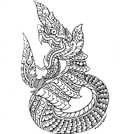
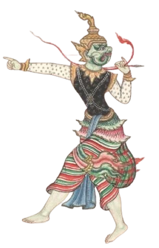
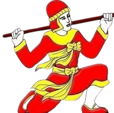
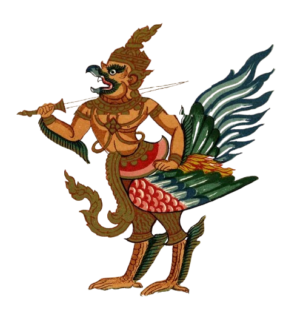

The Burmese language is the official language of the country of Myanmar. The language is part of the Tibeto-Burman branch of the Sino-Tibetan language family. Burmese is a tonal language, meaning that the meaning of a word can change based on the pitch or tone used when speaking it.
The writing system is heavily inspired from old pyu and old mon scripts, the languages are Indosphere influence which also makes the Burmese script an Indosphere influenced script.
Burmese culture is with rich history and significance, existing for hundreds and thousands of year, the culture is heavily influenced by Buddhism since the start of the Burmese civilization. The dominant culture of the country Myanmar, a country in South East Asia.

0s

ChinTae
A mythical lion creature, mostly portrayed as the guardians of Buddha. Usually displayed in entrance of temples, pagodas and monasteries in pairs of two.

Nagar
Burmese version of a dragon. These creatures are portrayed as guardians of temples and shrines. They are powerful beings with the ability to swim through the earth like water and fly in the sky. In some stories, their angry gaze can turn enemies to ash.

Belu
Man-eating demons or ogres capable of shapeshifting. Ranging from the size of a human to giants. Belu with straight fangs are the evil ones that eat humans. Belu with curved or hooked fangs eat flowers and fruits and are not evil.

Zawgyi
A semi-immortal human alchemist and mystic with supernatural powers and often seen with a magic stick and a red hat. Zawgyi have supernatural powers such as flying through the air, travelling beneath the earth and oceans, as well as performing divination, necromancy and resurrection.

Galone
A mythical bird, known for being large and powerful being with golden wings. Nemesis of the Nagars.
ChinTae
A mythical lion creature, mostly portrayed as the guardians of Buddha. Usually displayed in entrance of temples, pagodas and monasteries in pairs of two.
Nagar
Burmese version of a dragon. These creatures are portrayed as guardians of temples and shrines. They are powerful beings with the ability to swim through the earth like water and fly in the sky. In some stories, their angry gaze can turn enemies to ash.
Belu
Man-eating demons or ogres capable of shapeshifting. Ranging from the size of a human to giants. Belu with straight fangs are the evil ones that eat humans. Belu with curved or hooked fangs eat flowers and fruits and are not evil.
Zawgyi
A semi-immortal human alchemist and mystic with supernatural powers and often seen with a magic stick and a red hat. Zawgyi have supernatural powers such as flying through the air, travelling beneath the earth and oceans, as well as performing divination, necromancy and resurrection.
Galone
A mythical bird, known for being large and powerful being with golden wings. Nemesis of the Nagars.
Burmese food is influenced from both China and the Indian subcontinent, you will see most dishes that area similar to both regions. Burmese food also have similarities with bother South East Asian foods, since recipes are interchanging between different regions and countries. Burmese food also had influence over Thai and Lao food during the times of Burmese conquest to those regions. Most Burmese foods are based on salty and spicy taste, though it varies based on the region. In the southern parts of Myanmar you will find mostly spicy food and a lot of seafood, in the north the food is generally milder than the south.
Enter Your Spice Level